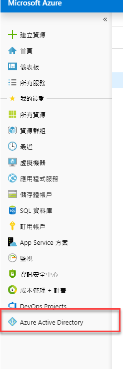
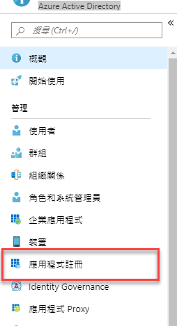
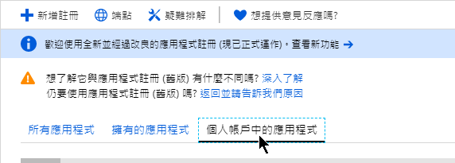

身為微軟 MVP，沒將 Angular 與 O365 做整合，好像說不過去。Microsoft O365 系列，其生態系其實算是很完整了，也提供了相當不錯的 API 供開發者做延伸應用。基於這個理由，我也決定要來玩看看 O365 了。但在開始之前，要先搞定登入 MS 帳號並取得通行 Token。所以這篇筆記就是記錄如何登入並取得 Token.
環境準備
在開發之前，需要先到微軟的 Application Registration Portal 新增應用程式並取得應用程式識別碼。操作步驟如下
(2019/7/26) 目前註冊應用程式的方法
-
登入 Azure portal
-
前往 Azure Active Directory

-
點選【應用程式註冊】

-
依自己的需求選擇註冊位置

-
註冊要新增的內容與舊有的註冊流程類似，可以參閱下面的填寫內容
-
(以下步驟失效)
-
登入 MS 帳號

-
按 【新增應用程式】

-
輸入應用程式名稱

-
新增【平台】

-
選擇 Web

-
設定【重新導向 URL】，這裡必須設定正確，不然會出現無法操作的錯誤畫面。因為我們會使用 Angular 做開發，預設的網址是
http://localhost:4200。
-
將應用程式識別碼先記錄起來，待會會用到

-
最後，按下【儲存】即完成第一步的設定
-
-
Angular 部分
完成了新增應用程式並取得應用程式識別碼後，就可以開始來寫 Angular 的部分了。這次會使用到 msal 這個套件 (npm套件位置)
The MSAL library preview for JavaScript is the core library which enables JavaScript web applications to authenticate enterprise users using Microsoft Azure Active Directory (AAD), Microsoft account users (MSA), users using social identity providers like Facebook, Google, LinkedIn etc. and get access to Microsoft Cloud OR Microsoft Graph.
基本環境設定
-
建立 Angular 專案
ng new <project name> -
安裝
msal套件npm install msal -
新增一個
service，等一下會將登入的相關邏輯寫在這個 service 內，名稱自取 -
在
environment.ts內新增一個APPLICATION_CONFIG，內放要給 msal 使用的設定檔1
2
3
4
5
6
7APPLICATION_CONFIG: {
clientID: '放剛剛記下來的應用程式識別碼',
redirectUri: 'http://localhost:4200/',
interactionMode: 'popUp',
graphEndpoint: 'https://graph.microsoft.com/v1.0/me',
graphScopes: ['user.read']
}- clientID: 應用程式識別碼
- graphScopes: 設定此應用程式需要與使用者請求的授權範圍
使用者登入
service
-
建立
Msal.UserAgentApplication1
2
3
4
5
6
7
8
9
10
11
12
13
14
15
16
17
18
19
20
21
22import { environment } from '../environments/environment';
import * as Msal from 'msal';
...
export class GraphHelperService {
readonly APPLICATION_CONFIG = environment.APPLICATION_CONFIG;
private clientApplication: Msal.UserAgentApplication;
constructor(private http: HttpClient) {
this.clientApplication = this.createApplication();
this.clientApplication.handleRedirectCallback((error, response) => {
// handle redirect response or error
});
}
private createApplication() {
const msalConfig = {
auth: {
clientId: this.APPLICATION_CONFIG.clientID
}
};
return new Msal.UserAgentApplication(msalConfig);
}
} -
建立
login()方法1
2
3
4
5
6
7
8
9
10
11
12
13
14
15
16
17
18
19
20
21
22
23
24
25
26
27
28
29
30
31
32
33
34
35
36
37
38login() {
const acquireTokenSilent = () =>
from(
this.clientApplication.acquireTokenSilent({
scopes: this.APPLICATION_CONFIG.graphScopes
})
);
const acquireTokenPopup = () =>
from(
this.clientApplication.acquireTokenPopup({
scopes: this.APPLICATION_CONFIG.graphScopes
})
).pipe(
catchError(error => {
window.alert('Error acquiring the popup:\n' + error);
return EMPTY;
})
);
from(this.clientApplication.loginPopup({scopes:this.APPLICATION_CONFIG.graphScopes}))
.pipe(
mergeMap(token => {
return acquireTokenSilent().pipe(
catchError(err => acquireTokenPopup())
);
})
)
.subscribe(
accessToken => {
localStorage.token = accessToken;
window.location.reload();
},
error => {
window.alert('Error during login:\n' + error);
}
);
}loginPopup會開啟一個邀情登入微軟帳號的畫面，輸入完帳號密碼時，會進入下一個步驟acquireTokenSilent: 取得accessToken- 再將取到的
accessToken存入到localStorage內 - 將整個畫面重整 (這個動作可以替換成更合適的行為)
-
建立
logout()方法，這個比較簡單1
2
3
4
5logout() {
this.clientApplication.logout();
delete localStorage.token;
delete localStorage.user;
}- 直接呼叫 logout() 方法
- 刪除儲存在
localStorage內的相關資訊
component
當 Service 建立完成後，我們就可以在 Component 的地方使用該 service 做使用者登入的動作了
1 | export class AppComponent implements OnInit { |
取得使用者資訊
當成功登入後，我們就可以利用取得的 accessToken 來使用 MS Graph，什麼是 MS Graph ？MS Graph 是一個可以使用 Microsoft 365 服務的 API，透過這個 API 可以存取使用 O365 的服務內容，例如信件、行事曆、OneDrive 等。
這篇筆記，先來做個基本資料的取得，如帳號的顯示名稱跟 Email
service
可以透過呼叫 https://graph.microsoft.com/v1.0/me 來取得登入帳號的基本資訊
1 | me() { |
component
呼叫 service 的 me()
1 | this.graphHelper.me().subscribe(user => { |
如果想要進一步知道取回來使用者資料有哪些項目，可以使用 console.log 的方法觀看
Recap
當正常登入後，就可以使用 Graph REST API 了。O365 的服務種類很多，可以透過延伸服務創造出另外一種的應用程式。但相關的開發文件又不多，所以在多次撞牆後，還是覺得將過程記錄起來，方便其他有興趣的人可以少走一些路。